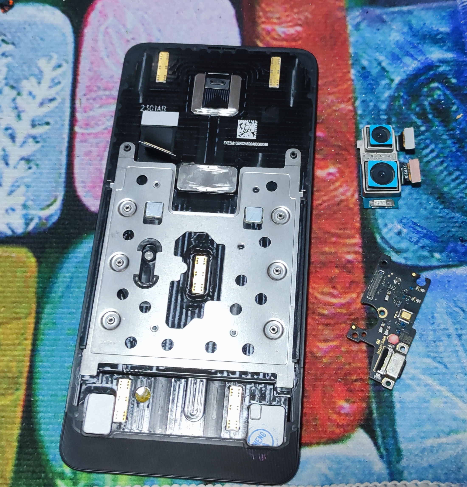

Values & Philosophy
🇸🇬🇲🇾🇵🇭🇹🇼🇻🇳🇹🇭🇮🇩🇲🇲
I'm anti-war and anti-military. Most people in Asia face mandatory conscription, and I refuse to fight a war against my brothers overseas - regardless of race or religion. This shared view has allowed me to quickly form strong bonds with any conscript I've met in Asia.
I make friends wherever I go, introduce them to each other and turn that into a strong network.
People have often described me as having ‘the patience of a saint,’ perhaps with a touch of concern about a ‘savior complex.’ I genuinely believe that when someone asks for help, it’s a serious matter that deserves a response, and I feel a responsibility to see things through to the end.
I'm also pro-consumer, typically right to repair, and generally harbour a strong resentment towards consumerism. If it's any indicator, my phone is 6 years old and has undergone a screen replacement, 2 battery replacements, a rear camera replacement, charging port replacement, side button fixes and even a fingerprint scanner replacement. All carried out by yours truly of course.
